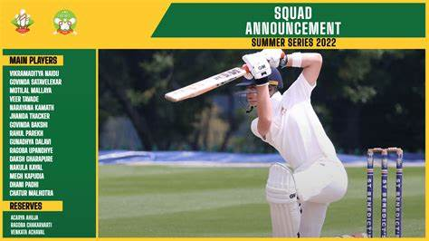

click the link beside to check all the cricket team's squads!
A squad announcement in cricket refers to the official declaration of the players selected for a particular series, tournament, or match, This announcement is usually made by the cricket board or team management and includes details such as: The full list of players in the squad, Key inclusions and exclusions, Leadership roles (captain, vice-captain), Injury updates or replacements, These announcements are eagerly awaited by fans and analysts as they reveal team strategies, new selections, and any surprises in the lineup.
